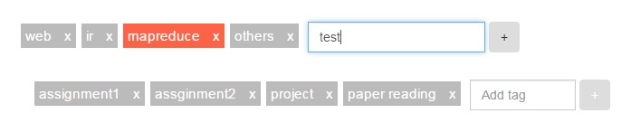
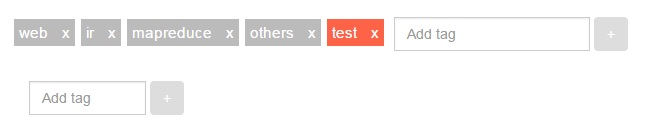

Enable tag add and remove


Documentation
In this experiment, I provides the functionality to add and remove tag so that user can personalize the L1 and L2 tags.
This is achieved in client side, using html and angularjs.
Code Snippet
Following code is html code to add the remove x href and the add tag form. When user
clicks the x, it will call angular js removeL1Tag(tag). When user clicks
the add tag button, it'll call addL1Tag()
<ul>
<li ng-repeat="tag in timerCtrl.tags" class="timer-tag show-animation">
<a ng-click="timerCtrl.chooseL1Tag(tag)"
ng-class="timerCtrl.isTagActivated(tag.tagName, '1') ? 'task-tag-activated' : 'task-tag-unactivated'">
{{tag.tagName}}
<a ng-click="timerCtrl.removeL1Tag(tag)"
ng-class="timerCtrl.isTagActivated(tag.tagName, '1') ? 'task-tag-activated' : 'task-tag-unactivated'">x</a>
</a>
</li>
<li class="timer-tag show-animation" >
<form class="form-inline">
<div class="form-group">
<div class="input-group">
<input type="text" class="form-control" placeholder="Add tag" ng-model="timerCtrl.newL1Tag">
</div>
</div>
<button type="button" class="btn" ng-click="timerCtrl.addL1Tag()">+</button>
</form>
</li>
</ul>
RemoveL1Tag is as following. addL1Tag is similar. It'll directly edit the local copy of tags array, and then
call updateTag which calls into http service to update tags on server side.
this.removeL1Tag = function(tag) {
for (idx in this.tags) {
if (this.tags[idx].tagName == tag.tagName) {
this.tags.splice(idx, 1)
updateTag()
if (this.activatedTag.tagName == tag.tagName) {
this.activatedTag = ''
this.currentStatus = 'init'
}
break
}
}
}
var updateTag = function() {
httpService.updateTags(controller.tags).then(function(res) {
})
}